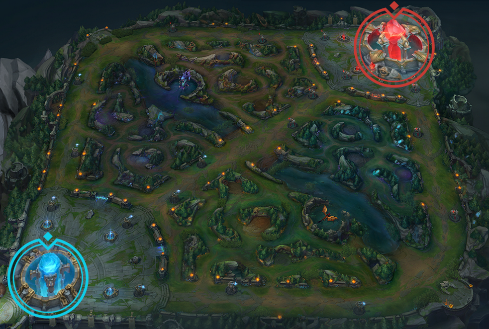
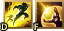

League of Legends est un jeu de stratégie en équipe dans lequel deux équipes de cinq champions (personnage) s'affrontent pour détruire la base adverse.
Faites votre choix parmi plus de 140 champions disponibles, partez au combat,
éliminez vos adversaires avec adresse et abattez les tourelles ennemies pour décrocher la victoire.
Détruire la base
Le Nexus est le cœur de la base de chaque équipe. Détruisez le Nexus ennemi en premier pour remporter la partie.
Votre Nexus
Votre Nexus est le lieu d'apparition de vos
sbires
(robots). La
fontaine
se trouve derrière le Nexus, et vous pouvez y récupérer vos PV (point de vie) et votre mana (pour attaquer),
ainsi qu'accéder à la
boutique
(pour améliorer son champion).
Nexus ennemi
Le Nexus ennemi est en tout point similaire au vôtre, si ce n'est qu'il se trouve dans la base de l'équipe adverse. Détruisez le Nexus ennemi pour que votre équipe remporte la partie.

Tourelles
Les tourelles infligent des dégâts aux sbires et aux champions ennemis, et elles confèrent à leur équipe une vision limitée dans le
brouillard de guerre.
Attaquez ces structures avec des sbires devant vous pour éviter que votre champion ne subisse des dégâts, puis foncez jusqu'au Nexus.
Inhibiteurs
Chaque inhibiteur est protégé par une tourelle. Lorsqu'un inhibiteur est détruit, des
super-sbires apparaîtront sur cette voie pendant quelques minutes.
Plus tard, l'inhibiteur réapparaîtra et les super-sbires arrêteront d'apparaître.
À l'assaut de la jungle
La jungle se trouve entre les voies et elle est remplie de monstres neutres et de plantes diverses.
Les deux types de monstres les plus importants sont le baron Nashor et les dragons.
Éliminer ces unités offre à votre équipe des bonus uniques qui peuvent vous permettre de faire tourner la partie en votre faveur.
Baron Nashor
Le baron Nashor est le monstre le plus puissant de la jungle.
Il confère à l'équipe qui l'abat des dégâts d'attaque et de la puissance supplémentaires, un Rappel (une téléportation pour rentrer au nexus) amélioré et
une amélioration qui augmente grandement la puissance des sbires proches des joueurs qui ont le baron nashor.
Dragons
Les dragons sont de puissants monstres qui octroient des bonus uniques en fonction de l'élément du dragon éliminé.
Il y a quatre dragons élémentaires (feu, océan, montagne et nuage) et un dragon ancestral.
Choisissez votre voie
Il existe cinq postes qui donnent la formation d'équipe recommandée pour le jeu.
Chaque voie correspond plus particulièrement à certains types de champions et de rôles.
Essayez tous les postes ou concentrez-vous sur celui qui vous parle le plus.
Voie du haut :
Les champions de la voie du haut sont de puissants combattants en solo.
Leur rôle est de protéger leur voie et de s'occuper des membres les plus puissants de l'équipe ennemie.
Jungle :
Les junglers vivent pour la chasse. Ils traquent les champions ennemis en toute discrétion, gardent un œil sur les monstres neutres les plus importants et
fondent sur leurs adversaires au moment où ils s'y attendent le moins.
Voie du milieu :
Les champions de la voie du milieu sont des champions capables d'infliger d'importants dégâts instantanés tout en restant polyvalents :
ils peuvent briller en solo ou exceller en combat d'équipes.
À leurs yeux, le combat est une dangereuse danse dans laquelle ils cherchent constamment à surpasser leur adversaire.
Voie du bas :
Les champions de la voie du bas sont la force brute de l'équipe. Il faut les protéger en début de partie,
leur laisser le temps d'amasser des PO et expérience pour qu'ils puissent ensuite mener votre équipe à la victoire.
Support :
Les supports sont les gardiens de l'équipe. Ils maintiennent leurs équipiers en vie et cherchent principalement à faciliter l'élimination des ennemis,
tout en protégeant leur partenaire de la voie du bas jusqu'à ce qu'il devienne suffisamment puissant.
Renforcez votre champion
Les champions se renforcent en amassant de l'expérience, qui permet d'augmenter leur niveau, et des PO, qui permettent d'acheter de puissants objets au fil de la partie. Conserver l'avantage sur ces deux points est essentiel pour surpasser l'équipe ennemie et détruire sa base.
↑ Gagner de l'expérience ↑
Lorsque les champions amassent suffisamment d'expérience, ils gagnent un niveau et peuvent déverrouiller ou améliorer leurs compétences, ainsi qu'augmenter leurs stats de base.
Gagnez de l'expérience en éliminant des unités et des champions ennemis, en aidant vos alliés à les tuer ou en détruisant des structures défensives.
↑ Gagner des PO ↑
Les PO (pour pièces d'or) sont la devise utilisée en jeu pour acheter les objets dont vous voulez équiper votre champion.
Gagnez des PO en éliminant des unités et des champions ennemis, en aidant vos alliés à les tuer, en détruisant des structures défensives ou en équipant des objets de génération de PO.
Boutique
La boutique vous permet d'acheter des objets avec les PO que vous avez gagnées et d'en vendre. Vous y avez uniquement accès depuis votre fontaine.
Cliquez pour plus d'information
Voici une vidéo qui explique plus précisément la boutique cliquez ici.
Déverrouillez vos compétences
Les champions ont cinq compétences uniques, deux sorts spéciaux et jusqu'à sept objets à la fois.
Afin d'aider votre équipe de façon optimale, vous devrez découvrir l'ordre idéal dans lequel améliorer vos compétences,
quels sorts d'invocateur prendre et quels objets acheter pour contrer l'équipe ennemie.
Compétences
La plupart des champions possèdent un kit unique composé de cinq compétences :
une compétence passive,
trois compétences de base
et un ultime.
Ces compétences sont assignées aux touches A, Z, E et R.
Sorts d'invocateur

Les sorts d'invocateur sont des compétences aux effets uniques que les champions peuvent utiliser. Ils sont assignés aux touches D et F.
Il y a de nombreux sorts, mais les sorts les plus fréquemment utilisés sont
Saut éclair,
Téléportation,
Châtiment et
Embrasement.
Objets
Les objets améliorent les performances de votre champion. Ils peuvent par exemple augmenter sa vitesse de déplacement, améliorer ses dégâts ou réduire les délais de récupération de ses sorts. Contrairement aux
reliques, vous avez besoin de PO pour les acheter.